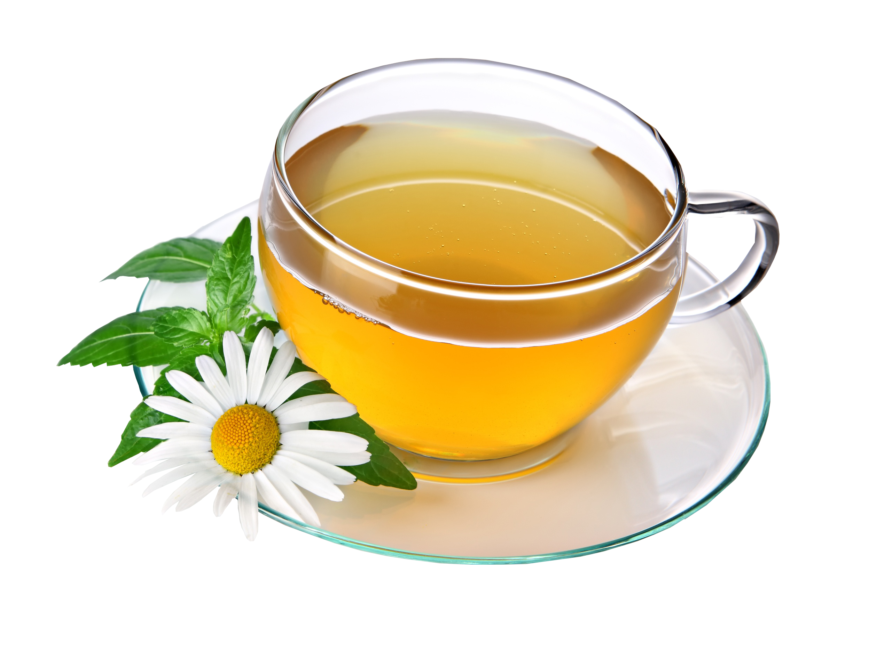

Tea

Ingredients
- 2 teaspoons Green tea leaves
- 2 cups Water
- Honey , (optional) to taste
Preparation steps
- To begin making Green Tea Recipe, take a saucepan and start heating water on a high heat.
- Once the water starts boiling, turn off the heat and add the green tea leaves.
- Keep it covered for a minute.
- Strain the green tea into the tea cups.
- Add honey to taste (only as a sweetener, you can completely skip it), give it a swirl and serve.
- Serve Green tea recipe with a snack like Baked Aloo Tikki Recipe and Dhaniya Pudina Chutney Recipe (Green Chutney) during evenings.